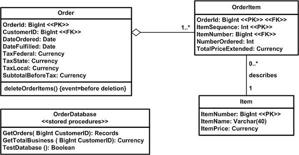

| Guideline: Physical Data Modeling |
 |
|
| Related Elements |
|---|
OverviewPhysical data models (PDMs) are used to design the structure of a persistent data store. Typically a PDM is created for a single data store, although sometimes a PDM will cover several related data stores (this is particularly true with the data storage mechanism is file based). The assumption in this guideline is that you are modeling the schema of a single relational database.The Data Model in OpenUPThe PDM is part of the Work Product: Design. It’s described as different views or perspectives of a portion of the design.Data Model TypesTraditionally, there are three types of data models:
For systems built using object and/or component-based technology, the LDM is usually not created in favor of a class model. Physical Data ModelingThe PDM consists of the detailed database table designs and their relationships. The tables in the PDM have well-defined columns, as well as keys and indexes as needed. The tables might also have triggers defined as necessary to support the database functionality and referential integrity of the system. In addition to the tables, stored procedures have been created, documented, and associated with the database in which the stored procedure will reside. The diagram below shows an example of some of the elements of a PDM. A UML-based notation is used, although other notations such as “crow's feet” or Information Engineering (IE) are also common. This example model is a part of the PDM of a fictional order entry system. It depicts three tables (Order, OrderItem, and Item), three stored procedures (GetOrders, GetTotalBusiness, and TestDatabase), and a trigger on Order named deleteOrderItems. The figure also depicts the columns of each table, the primary key for each table, and any foreign keys to other tables. Example Physical Data Model  An existing database can be reverse-engineered to populate the PDM if the team has access to a tool that can transform a database into a model. How to Model Database SchemasPerform the following in an iterative manner:
Data Modeling Throughout the LifecycleInception PhaseDuring the Inception phase the goal is to identify high-level requirements for the system so that the scope may be identified and project funding obtained. Little, if any, data modeling is performed at this point although some conceptual modeling may occur. Detailed data models are usually not needed at this point. Elaboration PhaseThe goal of the Elaboration phase is to eliminate technical risk and to produce a stable (baselined) architecture for the system. One of several architectural issues that is likely to arise is data architecture. To support this effort, you will need to model the major database structures (tables, indexes, and primary and foreign key columns) and then create the database schema from the model (ideally it would be generated from a modeling tool). Additionally, representative data volumes may be loaded into the database to support performance testing. Based on the results of performance testing, the PDM might need to be adjusted with optimization techniques, including but not limited to de-normalizing, optimizing physical storage attributes, or distribution and indexing. Construction PhaseDuring the Construction phase the goal is to build a working system that is ready to be released. During each iteration the design, implementation, and tests are fleshed out to implement that iteration's requirements. In other words development artifacts, including your data-oriented artifacts, evolve over time. To support data model changes you may discover the need to refactor your existing database schema. Transition PhaseThe PDM is maintained during the Transition phase in response to approved change requests. You should keep the PDM synchronized with the database as the application goes through final acceptance test and is deployed into production. Round-trip Engineering ConsiderationsIf a development team is using modern visual modeling tools that have the ability to convert classes to tables (and vice versa) or has the ability to reverse and forward engineer databases, then the team needs to establish guidelines for managing the transformation and engineering processes. The development team must define the points in the development of the application (build-and-release cycle) at which it will be appropriate to perform the class-to-table transformations and to forward-engineer the database. Once the initial database is created, the development team must define guidelines for the team to manage the synchronization of the PDM and database as the design and code of the system evolve throughout the project. |
This program and the accompanying materials are made available under the View copyright information here: OpenUP Copyright |